12,400+
Volunteers actively showing up for real
projects, not just signed up and
forgotten.
Volunity brings volunteers, NGO's, and the communities they serve onto one platform, so help finds its way to people who need it, without spreedsheets, guesswork, or missed connections.
Join Volunity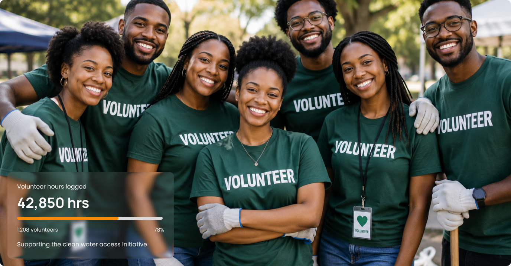
See it in Action
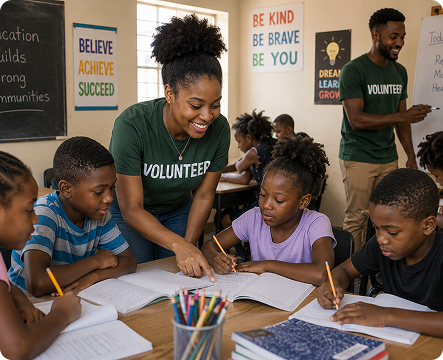
Volunteer teaching in community classrooms
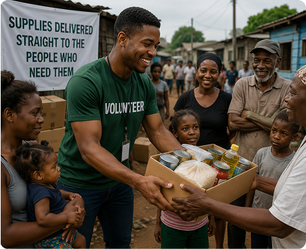
Supplies delivered straight to the people who need them
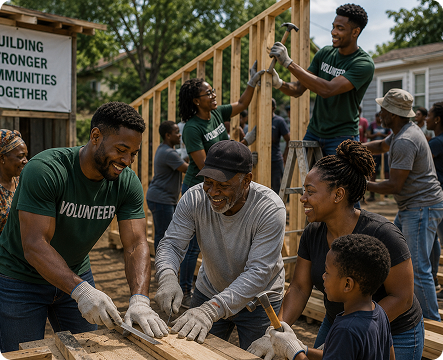
Volunteer and community building side by side
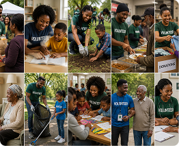
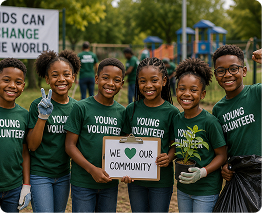
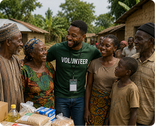
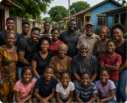
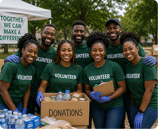
Three steps take you from signing up to actually making a
difference, wether you're giving your time or running the project.
Volunteer lists their skills and availability,
NGO's register their organization and set up their first
project.
Coordinators assign tasks that actually fit your
skill and schedule, instead of a mass message
hoping someone bites.
Log your hours, complete tasks, and watch your
contribution add up in a record you and your NGO
can both see.
Volunteers actively showing up for real
projects, not just signed up and
forgotten.
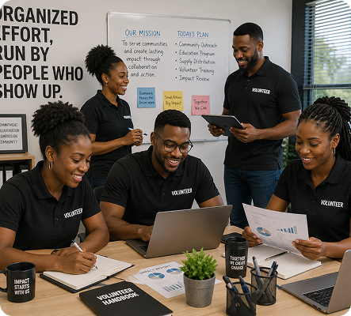
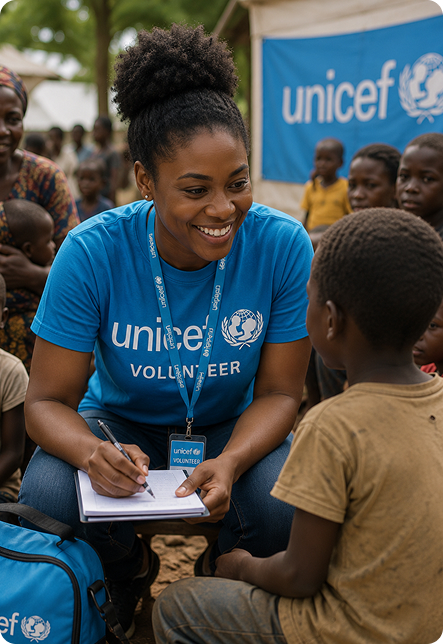
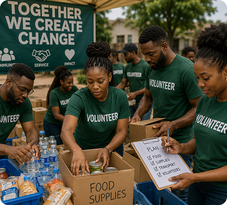
Logged by volunteers across every active
project, tracked, not estimated.
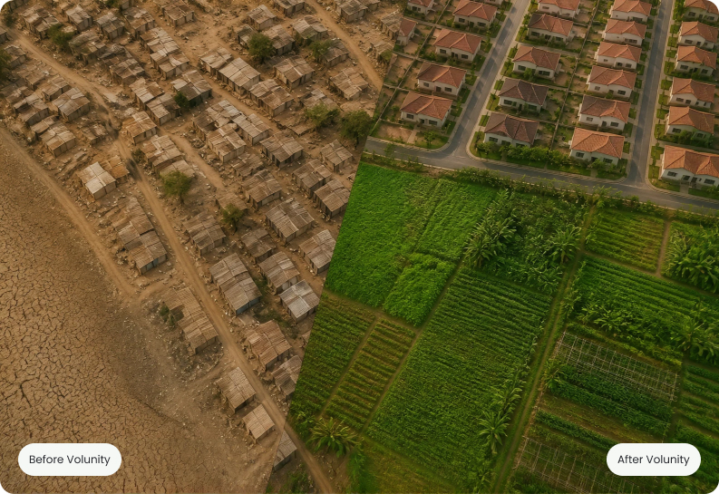
The same community, one side left waiting, the other reached by
volunteer, who had a clear task,
a clear timeline, and a system that made sure nothing fell through
the cracks.
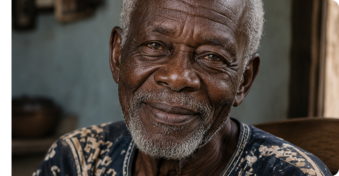
Volunity exists because good intentions shouldn't get lost in
disorganized sign-up sheet and unanswered messages. We give
NGO's a real system to run their projects, and give volunteers a
clear way to see their time actually makes a difference.
Join as a volunteer, or bring your organization onto volunity and
start managing your projects the way they desrve.